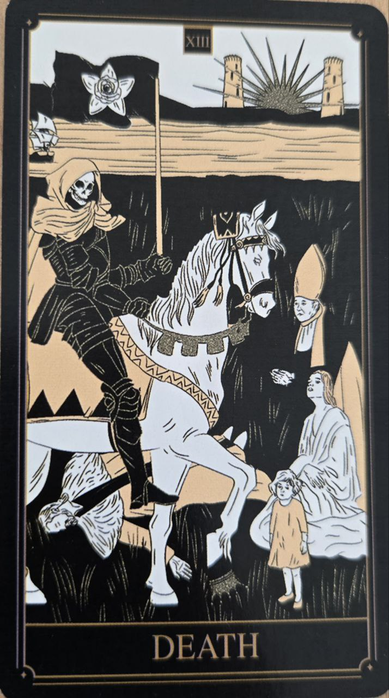

Smrť patrí medzi najznámejšie a zároveň najviac nepochopené tarotové karty. Napriek svojmu názvu zriedka symbolizuje doslovnú smrť.
Jej hlavnou témou je transformácia a koniec jednej etapy, ktorý umožňuje vznik novej.
Karta predstavuje zmenu, ukončenie starých vzorcov a prechod do novej životnej fázy.
Naznačuje, že niečo už splnilo svoj účel a je čas posunúť sa ďalej.
Na karte sa často nachádza jazdec alebo kostra, ktorí symbolizujú nevyhnutnosť zmien.
Vychádzajúce slnko v pozadí pripomína, že každý koniec zároveň prináša nový začiatok.
Smrť je často jednou z najpozitívnejších kariet pri osobnom raste, pretože umožňuje zbaviť sa toho, čo už neslúži svojmu účelu.